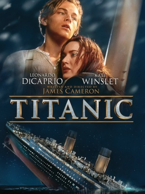

Kill Bill
Synopsis:
Description
Au cours d'une cérémonie de mariage en plein désert, un commando fait irruption dans la chapelle et tire sur les convives. Laissée pour morte, la Mariée enceinte retrouve ses esprits après un coma de quatre ans. Celle qui a auparavant exercé les fonctions de tueuse à gages au sein du Détachement International des Vipères Assassines n'a alors plus qu'une seule idée en tête : venger la mort de ses proches en éliminant tous les membres de l'organisation criminelle.
Réalisateurs : Tarantino
Date de sortie : 26 novembre 2003
Nombre d'entrées : 1 878 511
Titanic
 Réalisateurs: James Cameron
Date de sortie : 7 janvier 1998
Synopsis : En 1997, l'épave du Titanic est l'objet d'une exploration fiévreuse, menée par des chercheurs de trésor en quête d'un diamant bleu qui se trouvait à bord. Frappée par un reportage télévisé, l'une des rescapés du naufrage, âgée de 102 ans, Rose DeWitt, se rend sur place et évoque ses souvenirs. 1912. Fiancée à un industriel arrogant, Rose croise sur le bateau un artiste sans le sou.
Nombres d'entrées : 1290000
Titre
Réalisateurs / Auteurs
Date de sortie
Synopsis
Nombres d'entrées